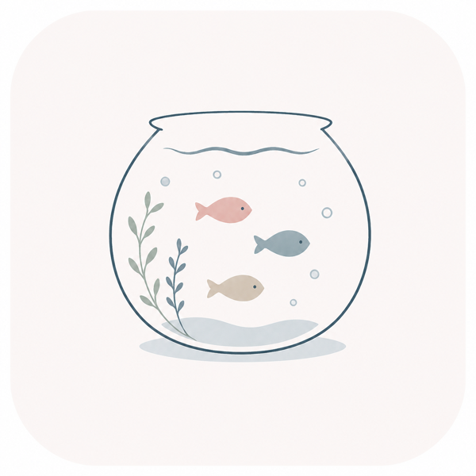

授業・研究
レポート、研究室、探究活動。ちょっと聞きたい疑問を近い分野の仲間へ。
「この分野、どこから学んだ？」
Manabium理工系女子のためのコミュニティ
授業、研究、進路の小さな疑問を、ひとりで抱え込まないために。Manabiumは、理工系を学ぶ女性たちが静かにつながる湖です。
周りに同じ立場の人が少なくても、ひとりで進まなくていい。
WHEN YOU NEED SOMEONE
答えだけではなく、「自分と近い誰かがいた」という安心も持ち帰れる場所を目指しています。
レポート、研究室、探究活動。ちょっと聞きたい疑問を近い分野の仲間へ。
「この分野、どこから学んだ？」学部選び、就活、働き方。理工系女性の実体験を匿名で分かち合う。
「女性の先輩の話を聞きたい」勉強会、コミュニティ、インターン。知らなかった機会と出会える。
「こんなイベントがあるよ」FROM A FISH TO A STORY
湖がにぎわってきたら、専攻や興味が近い仲間を優先して表示します。魚をタップするとプロフィールだけでなく、その人が流した公開ボトルも続けて読めます。
新しいボトルを流しました！
THE BOTTLE
今すぐ同じ時間にいなくても、相談や情報は湖に残ります。カテゴリと分野で探せて、返信は会話の流れごと確認できます。
A QUIET FIRST STEP
SlackやDiscordの代わりではありません。参加先をまだ知らない人や、いきなり会話へ入るのが不安な人が、興味の近い誰かと出会うための入口です。
SAFE BY DESIGN
本名や学校名を出さず、いきなり個別に連絡されない。安心して最初の一言を置ける距離感を大切にしています。
表示名はニックネーム。正確な学校名・住所・連絡先は公開しません。
湖では定型リアクション、相談は公開されたボトルの返信で行います。
魚として参加せずに見る、相手の表示やリアクションをミュートする選択肢があります。
登録時にコミュニティルールへ同意。安心を損なう使い方を前提にしません。
GROWING WITH YOU
情報系を学ぶ大学2年生の2人が、同世代の声を聞きながら開発しています。今の使い心地を一緒に確かめてくれる方を募集しています。
YOUR FIRST RIPPLE
本名や学校名は不要です。あとからマイページで変更できます。
MANABIUM COMMUNITY LAKE
魚は今ここにいる仲間、ボトルは時間を越えて届く相談や情報。理工系女子が安心して集まれる湖です。
MY STATUS
湖を開くと自動で参加別の画面へ移動すると魚はいなくなります
湖のリアルタイム設定がまだです。Supabaseで追加SQLを実行すると、他の利用者とリアルタイムにつながります。
いまは静かな湖ですあなたの魚が最初の一匹として泳ぎます。
魚は、今この湖にいる仲間タップするとプロフィールと定型リアクションを確認できます
ボトルは、届いた相談や情報タップすると内容を読み、返信できます
BOTTLE MESSAGE
誰かの経験が、いまのあなたのヒントになるかもしれません。
このカテゴリーの最初のメッセージを流してみましょう。
MY PAGE
プロフィールと、コミュニティでのやり取りを確認できます。
MY COMMUNITY
相談や情報共有は、ボトルメッセージからいつでも続けられます。